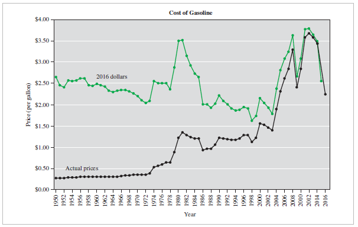
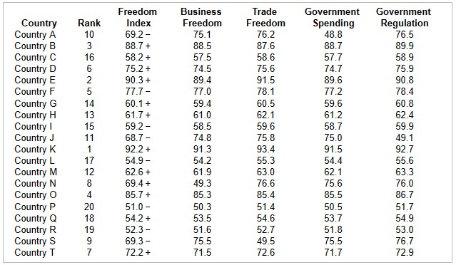

| Year | Price |
|---|---|
|
1960 1970 1980 1990 2000 2010 |
$0.31 $0.36 $1.22 $1.23 $1.56 $2.84 |
| Year | Average Gasoline Prices (per gallon) | Cost to fill a gas tank ($) |
|---|---|---|
| 1970 | 0.36 | what |
| 2000 | 1.56 | 15 |
| 1970 | 2000 |
|---|---|
| 0.2307692308 | 1 |
| what | 15 |
| Year | CPI | Average Cost ($) |
|---|---|---|
| 1975 | 53.8 | 17000 |
| 2001 | 177.1 | what |
| 1975 | 2001 |
|---|---|
| 1 | 3.291821561 |
| 17000 | what |
| Year | Price |
|---|---|
|
1960 1970 1980 1990 2000 2010 |
$0.31 $0.36 $1.22 $1.23 $1.56 $2.84 |
| Year | Average Gasoline Prices (per gallon) | Cost to fill a gas tank ($) |
|---|---|---|
| 2000 | 1.56 | 15 |
| 2010 | 2.84 | what |
| Year | Cost to fill ($) | How much gas tank |
|---|---|---|
| 2010 | 27.30769231 | 1 |
| 2010 | 15 | what |
| 2000 | 2010 |
|---|---|
| 1 | 1.820512821 |
| 15 | what |
| 2010 | 2010 |
|---|---|
| 27.30769231 | 1 |
| 15 | what |
| City | Index | City | Index | |
|---|---|---|---|---|
|
City A City B City C City D City E |
153 123 100 129 99 |
City F City G City H City J City K |
147 150 366 189 400 |
| City | Index | Price ($) |
|---|---|---|
| J | 189 | 260000 |
| A | 153 | whatA |
| H | 366 | whatH |
| D | 129 | whatD |
| Year | CPI | Purchasing power |
|---|---|---|
| 1980 | 82.4 | 1 |
| 1995 | 152.4 | what |
| Year | CPI | Cost ($) |
|---|---|---|
| 1982 | 96.5 | 1500 |
| 2004 | 188.9 | what |
| 1982 | 2004 |
|---|---|
| 1 | 1.957512953 |
| 1500 | what |
| Year | CPI | Cost ($) |
|---|---|---|
| 1976 | 56.9 | 0.23 |
| 2008 | 215.303 | what |
| 1976 | 2008 |
|---|---|
| 1 | 3.783884007 |
| 0.23 | what |

| Year | CPI | Purchasing power |
|---|---|---|
| 1982 | 96.5 | 1 |
| 2002 | 292.655 | B |
| Year | 1986 | 1996 | 2006 | 2016 |
| Price | $266 | $427 | $688 | $1026 |
| Average Annual CPI | 109.6 | 156.9 | 201.6 | 240.0 |
| Year | Price ($) | CPI |
|---|---|---|
|
2016 1986 2016 1996 2016 2006 |
price1 266 price2 427 price3 688 |
240 109.6 240 156.9 240 201.6 |
| Year | CPI | Cost ($) |
|---|---|---|
| 2008 | 215.303 | 9 |
| 1982 | 96.5 | what |
| 1982 | 2008 |
|---|---|
| 0.4482055522 | 1 |
| what | 9 |
| Team | FCI |
|---|---|
|
City A City B City C City D City E City F Major League Average |
$279.83 $173.08 $375.73 $314.59 $372.24 $137.17 $242.61 |
| Team | FCI ($) | New FCI ($) |
|---|---|---|
| Major League Average | 242.61 | 100 |
| City A | 279.83 | whatA |
| City B | 173.08 | whatB |
| City C | 375.73 | whatC |
| City D | 314.59 | whatD |
| City E | 372.24 | whatE |
| City F | 137.17 | whatF |
Use the Table of Federal Minimum Wages below and the CPI Table above to answer Questions 25 – 28
| Year | Actual Dollars | 1996 Dollars |
|---|---|---|
|
1938 1939 1945 1950 1956 1961 1967 1968 1974 1976 1978 1979 1981 1990 1991 1996 1997 2007 2008 2009 2016 |
$0.25 $0.30 $0.40 $0.75 $1.00 $1.25 $1.40 $1.60 $2.00 $2.30 $2.65 $2.90 $3.35 $3.50 $4.25 $4.75 $5.15 $5.85 $6.55 $7.25 $7.25 |
$2.75 $3.39 $3.49 $4.88 $5.77 $6.41 $6.58 $7.21 $6.37 $6.34 $6.38 $6.27 $5.78 $4.56 $4.90 $4.75 $5.03 $4.42 $4.77 $5.12 $4.74 |
| Year | CPI | Minimum wage ($) |
|---|---|---|
| 1976 | 56.9 | 2.30 |
| 1996 | 156.9 | what |
| 1976 | 1996 |
|---|---|
| 1 | 2.757469244 |
| 2.30 | what |
| Year | Minimum wage ($) | 1996 dollars ($) |
|---|---|---|
| 1996 | what | 7.21 |
| 2007 | 5.85 | 4.42 |
| 2007 | 1996 |
|---|---|
| 0.613037448 | 1 |
| 5.85 | what |
| Year | CPI | Purchasing power |
|---|---|---|
| 1981 | 90.9 | 3.35 |
| 1996 | 156.9 | what |
